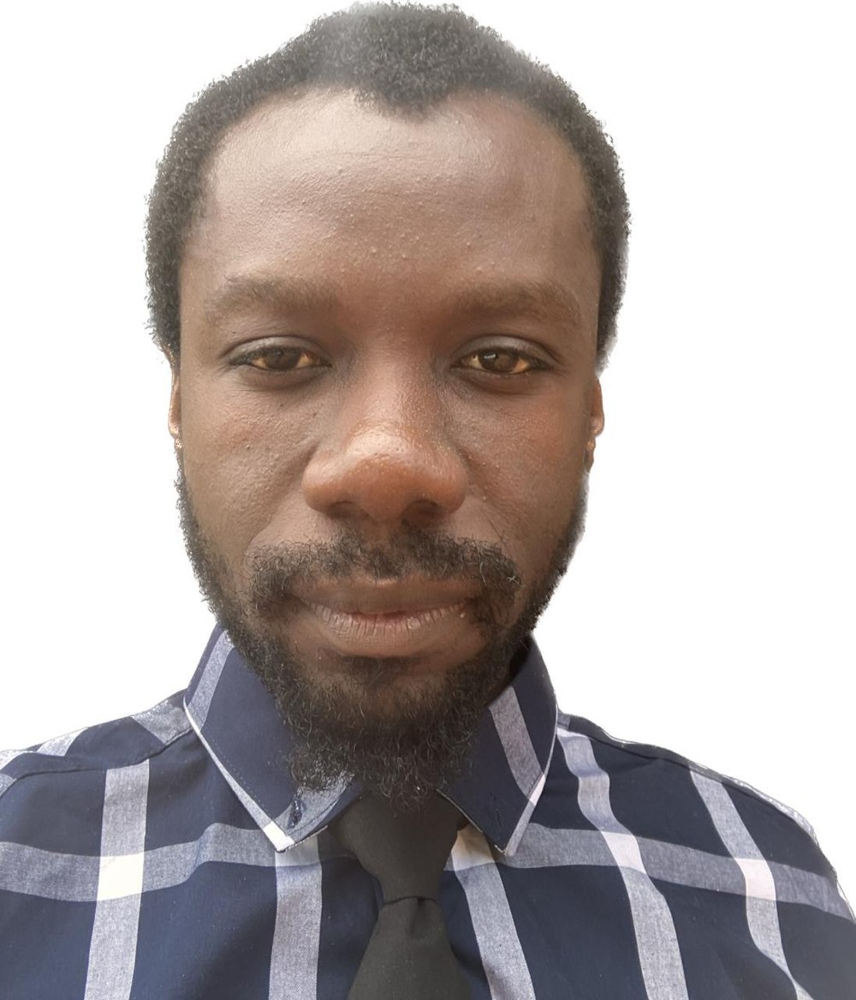

01⌘
Mechanical Engineering
Mechanical systems support, technical drawings, engineering inspections, component optimisation and technical problem-solving.
I'm Mulweli Trevor Maluleke — a Mechanical Technologist, freelance engineering consultant and developer combining industrial engineering experience with modern digital problem-solving.

I bring a multidisciplinary approach to technical challenges, drawing on manufacturing quality, mechanical systems, engineering inspections, technical documentation, coding and programming.
My work spans engineering consultancy interests, HVAC design and services, software development and practical process improvement. I focus on reliable, thoughtful solutions and clear communication from concept to delivery.
Start a conversation ↗Bridging physical engineering systems and digital technology.
Mechanical systems support, technical drawings, engineering inspections, component optimisation and technical problem-solving.
Engineering consultancy focus on HVAC systems, building services, design support, technical assessments and service coordination.
Web interfaces, programming, digital workflows and technical solutions that help people and businesses work smarter.
Inspection, metrology, quality assurance, root cause analysis, SPC, ISO 9001 and continuous improvement.
Problem identification, engineering documentation, process reviews, practical recommendations and stakeholder communication.
Measurement-led verification, technical inspection, equipment testing and structured investigation of system performance.
Selected engineering work from my professional background. More portfolio case studies can be added here.
Designed and optimised a black-sealer application nozzle setup to improve consistency, flow and defect reduction.
Mechanical design · Process improvementDeveloped calibration standards using precision instruments to improve inspection accuracy and consistency.
Metrology · Quality engineeringSupported fault finding, quality checks and structured technical reporting for loose-stud concerns.
Root cause analysis · InspectionIndependent consulting focus across engineering and technology. Specific client engagements and outcomes can be added after confirmation.
Industrial quality, inspection and process improvement; contributed to 30% efficiency improvement and 15% lower rework costs.
Machining, automation, engineering system testing, prototyping and validation.
Supported and mentored more than 20 students.
Open to engineering opportunities, technical consulting, software projects and collaborations.